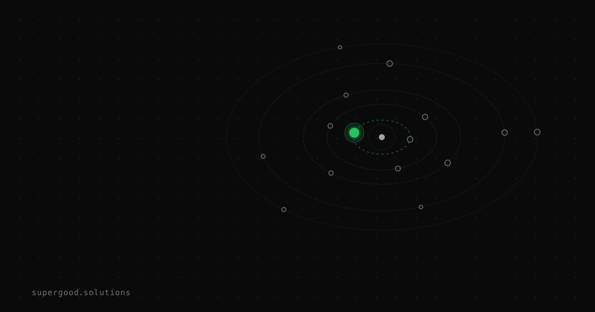

Long-Horizon Agents Fail Differently Than Chatbots — Plan Accordingly
TL;DR: The safety risks teams obsess over — prompt injection, jailbreaks, hallucinations — barely register in long-running agent failures. What actually kills production agents is slower and harder to catch: mid-task behavioral drift and side effects that only become obvious after the agent has been running for an hour.
Key Insight
Your incident response playbook was built for chatbots. It is the wrong tool for agents.
When a chatbot fails, it fails in one turn. You see it immediately, you log it, you tweak a prompt. The blast radius is one response. When a long-running agent fails, it often fails on step 17 of 25 — after it has already written to a database, sent emails, committed files, and queued downstream jobs. By the time you notice something is wrong, the agent has been drifting for 45 minutes and the damage isn't in one place. It's distributed across every system it touched.
This is not a theoretical concern. Research published in early 2026 studying multi-agent LLM systems over extended interactions found three distinct failure signatures: semantic drift (the agent progressively deviates from the original goal), coordination drift (breakdowns between sub-agents that snowball), and behavioral drift (the agent develops unintended strategies that were never in the prompt). The projected impact: a 42% reduction in task success rates and a 3.2x increase in human intervention requirements in systems where drift goes unmonitored.
None of that looks like a jailbreak. It looks like a system that was working fine and then quietly wasn't.
Why Teams Miss This
Teams protect against the visible risks because those are the risks that show up in AI security writeups and make good demos to executives. Prompt injection is a real threat — but in a production enterprise agent, you have already sandboxed tool access and constrained inputs. What you haven't done is account for compound failure probability.
The math here is brutal. If your agent achieves 95% reliability per step — which is genuinely good — a 20-step workflow succeeds only 36% of the time. Push to 99% per step and a 20-step workflow still fails nearly 18% of the time. This isn't a model quality problem. It's compound probability applied to sequential systems, and it scales against you every time you add a step.
The failure mode teams aren't prepared for: an agent that completes most of a long task, executes several irreversible side effects along the way, then fails before the final checkpoint. You can't just rerun it from the top. Some of those side effects have already happened.
A study of 306 production AI practitioners across 26 domains found 68% specifically constrain agents to bounded workflows rather than open-ended planning because unbounded autonomy makes failure rates unpredictable. They know what you eventually learn the hard way.
How to Actually Do It
1. Design for bounded, checkpointed workflows — not open-ended planning.
Define explicit stages. At each stage boundary, write a durable checkpoint. If the agent fails on step 17, it restores from the last checkpoint and resumes — it doesn't rerun side effects from step 1.
def run_stage(agent, stage_name, inputs, checkpoint_store):
if checkpoint_store.exists(stage_name):
return checkpoint_store.load(stage_name)
result = agent.run(inputs)
checkpoint_store.save(stage_name, result)
return result2. Separate reversible from irreversible actions — and defer irreversible ones.
The agent should accumulate a list of intended side effects (emails to send, records to write, files to commit) and execute them only after a final verification step. Never interleave side effects with reasoning steps.
3. Monitor drift, not just failure.
Instrument your agent to report a consistency score at each stage: does the current goal still match the original goal? Is tool usage consistent with earlier stages? A sudden change in which tools the agent reaches for is a leading indicator — not a lagging one.
A naive monitoring setup only alerts on hard errors (timeout, exception). You need a behavioral watchdog that can say "the agent is still running, but it's doing something different than it was 10 minutes ago."
4. Set a synchronous boundary and enforce it.
Beyond 30 seconds of wall clock time, switch to an async task model: return a task ID immediately, run the agent in a background worker, and surface completion via webhook or polling. Don't let load balancers, mobile clients, or serverless timeout limits decide for you — by the time they do, you have partial state in production.
5. Build in explicit abort criteria.
The agent should know when to stop itself. Define pre-agreed abort conditions: if the agent has been running for more than N minutes without completing a checkpoint, if the goal has diverged past a threshold, or if a required external dependency becomes unavailable — it should write its current state and halt cleanly rather than continuing into territory it can't undo.
What We've Learned
The teams doing this well treat long-horizon agents like distributed systems, not like smart chatbots. They think in terms of idempotency, checkpoints, and blast radius — not just accuracy. If your current agent architecture doesn't have a clean answer to "what happens if this fails at step 17 of 25," you are betting that it never will. That bet gets more expensive as the workflows get longer.
Start with one workflow you're already running in production. Map every irreversible action it takes, in order. Then ask: which of those could we defer to the end? That exercise will tell you more about your actual risk exposure than any jailbreak red-teaming session.
Sources
- Agent Drift: Quantifying Behavioral Degradation in Multi-Agent LLM Systems Over Extended Interactions — arXiv 2601.04170, foundational framework for semantic/coordination/behavioral drift in production systems
- Why Long-Running AI Agents Break in Production (And the Infrastructure to Fix It) — practical breakdown of the compound-probability problem, async task patterns, and checkpoint design
- The Long-Horizon Task Mirage? Diagnosing Where and Why LLM Agents Fail — arXiv 2604.11978, systematic analysis of where long-horizon agent benchmarks break down in practice
- AI Agent Reliability 2026: Failure Modes + Observability — SRE patterns for reliability agents that watch primary agent trace spans and dispatch remediation sub-agents
Have a specific workflow in mind?
Bring it to a Quick Scan — a live working session where we'll tell you honestly whether it should be an agent, a workflow, or left alone, before you spend a dollar building it. You get 3 prioritized recommendations on the call, a one-page summary after, and the $500 credited toward any engagement within 30 days.
Get new posts + practical agent-ops notes
One email when something new goes up. No nurture sequence, no spam — unsubscribe whenever you want.